Nacimos de la idea de compartir el conocimiento y la experiencia que fuimos adquiriendo a lo largo de nuestra trayectoria profesional en mantenimiento y limpieza de piscinas.
Queremos ayudar tanto a quienes desean entender mejor su pileta como a quienes prefieren resolver ciertos problemas por su cuenta, siempre basándonos en experiencias reales y métodos que utilizamos diariamente.
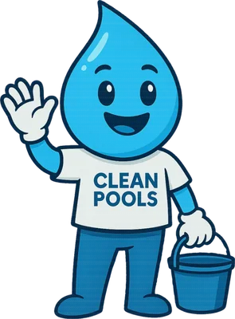
Hacé clic en el problema que estás viendo. Gotín te explica qué pasó, por qué y cómo solucionarlo.
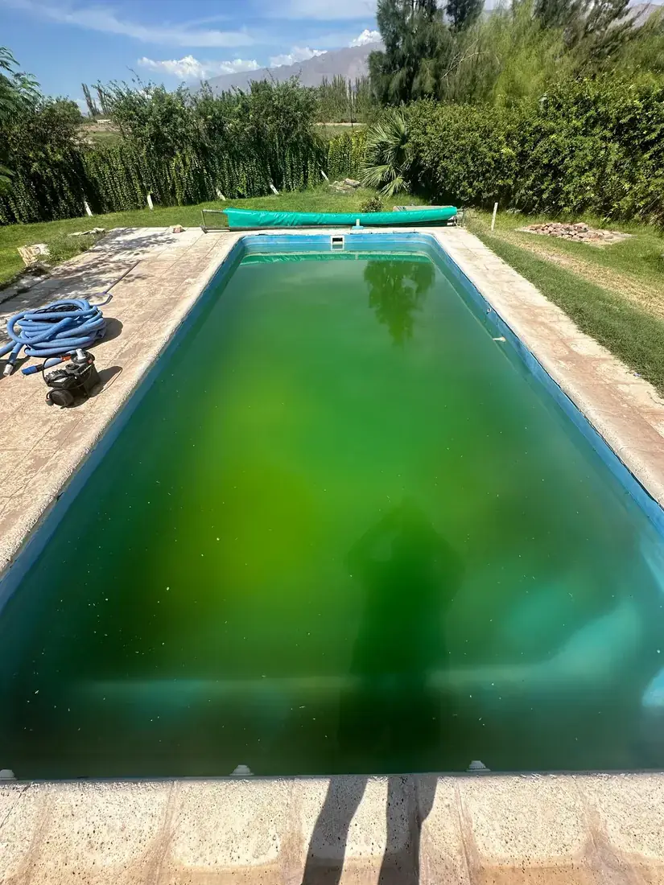
Alta urgenciaProliferación de algas por falta de cloro o filtrado deficiente. El problema más común en verano.
Ver solución →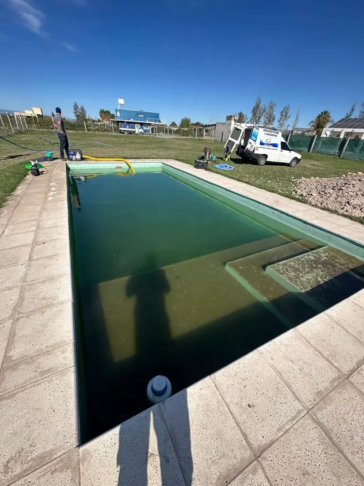
Urgencia mediapH desbalanceado, exceso de floculante o filtro sucio. El agua pierde transparencia.
Ver solución →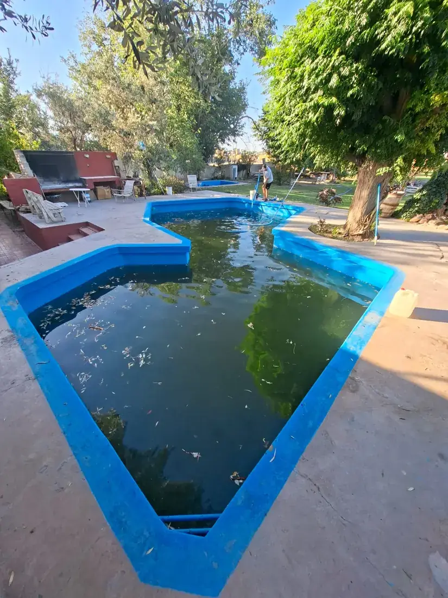
Urgencia mediaAlgas verdes pegadas que resisten el cloro normal. Requieren tratamiento específico.
Ver solución →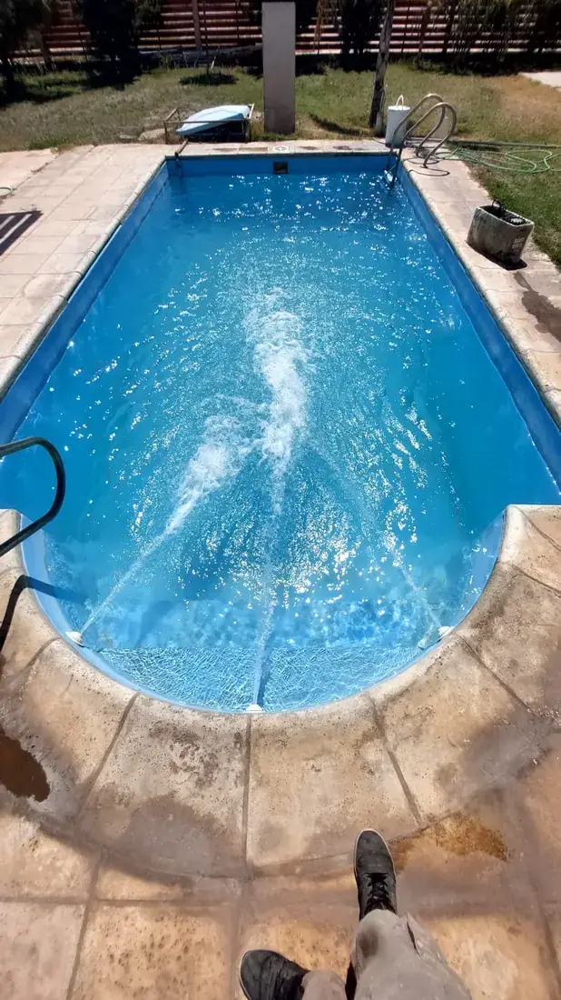
Urgencia mediapH fuera de rango: irrita ojos, daña el revestimiento e inutiliza el cloro.
Ver solución →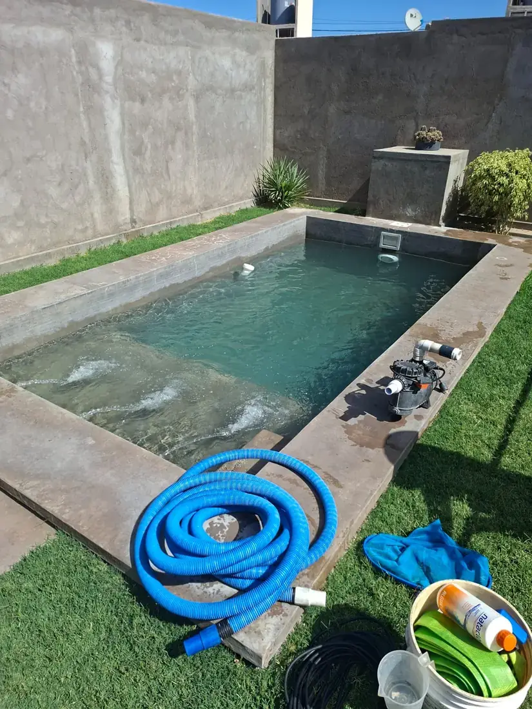
Urgencia mediaEl cloro desaparece rápido por exceso de cloraminas, pH alto o luz solar intensa.
Ver solución →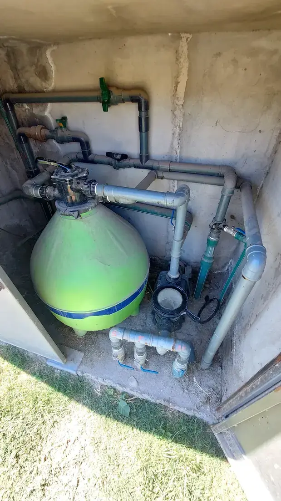
Revisión rutinariaEl manómetro sube o el caudal baja: señal clara de que el filtro necesita limpieza.
Ver solución →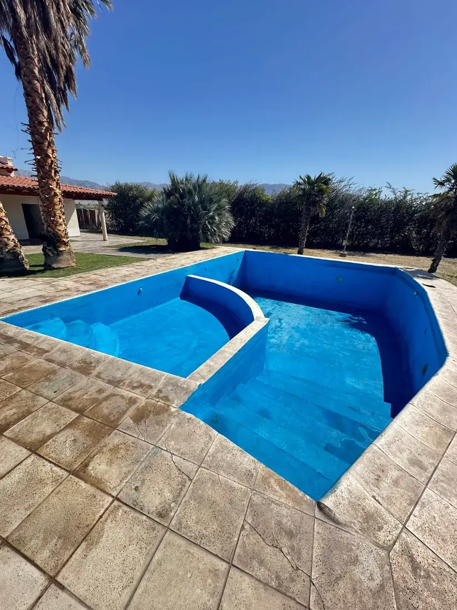
Revisión rutinariaDepósitos calcáreos en la línea de flotación o en el fondo. Causa pH alto crónico.
Ver solución →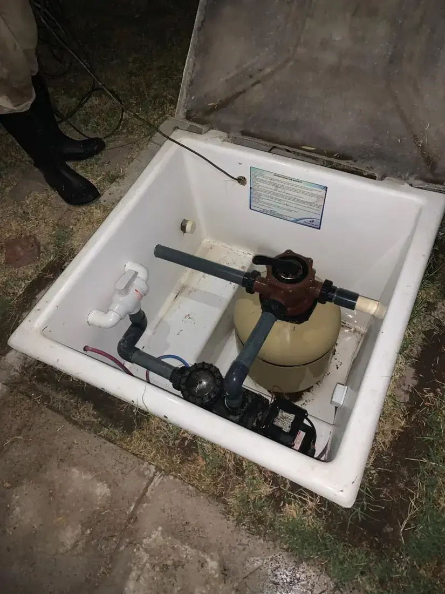
Urgencia mediaBomba con ruido, burbujas en los retornos o zonas muertas sin movimiento de agua.
Ver solución →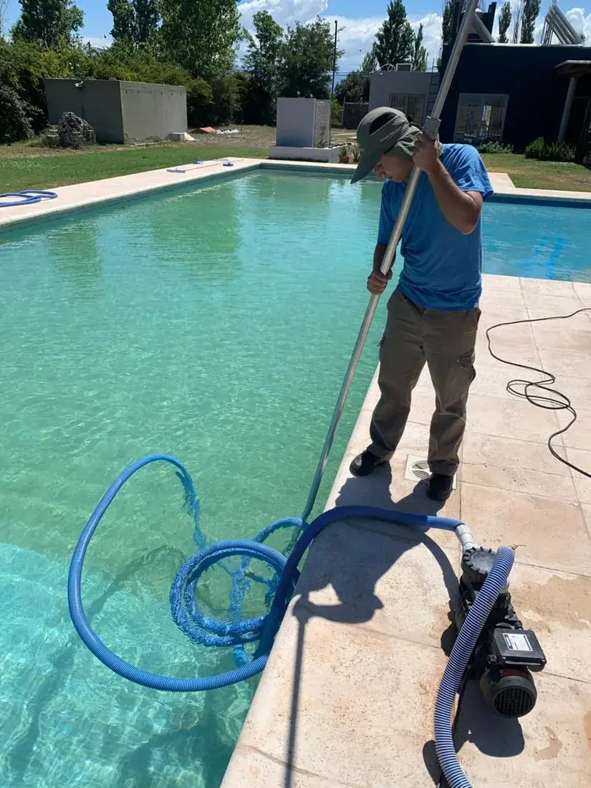
Baja urgenciaParadójicamente, el olor fuerte indica falta de cloro libre y exceso de cloraminas.
Ver solución →Para dosificar correctamente los productos químicos necesitás saber el volumen exacto de tu pileta. Acá te mostramos cómo calcularlo según la forma.
El error más común al tratar el agua es usar la dosis incorrecta porque no se conoce el volumen real de la pileta. Con muy poco producto no alcanza, con demasiado se desperdicia dinero y puede dañar el revestimiento.
Usá las fórmulas de abajo para calcular el volumen aproximado. Si tu pileta tiene forma irregular, dividila en secciones rectangulares, calculá cada una y sumalas.
Si no sabés la profundidad exacta, medí en tres puntos (zona poco profunda, media y profunda) y calculá el promedio. Para piletas con profundidad variable usá: (prof. mínima + prof. máxima) ÷ 2
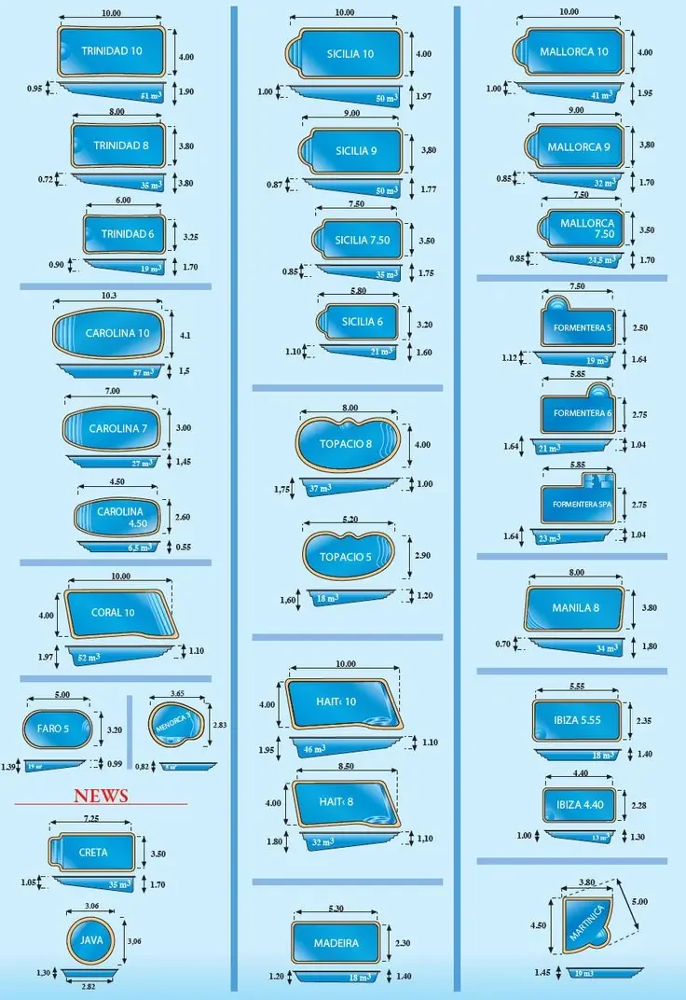
La forma más común y fácil de calcular. Ejemplo: 8m × 4m × 1.5m = 48.000 L
Multiplicar por 0.785 (π/4) para obtener el área real de la elipse.
El radio es la mitad del diámetro. Ejemplo: radio 3m, prof. 1.5m = 42.390 L
Usar 0.7 como factor de corrección para formas orgánicas irregulares.
Dividir en rectángulos, calcular cada uno por separado y sumar los volúmenes.
Si el resultado está en m³, multiplicá por 1.000 para obtener litros exactos.
Referencia rápida para dosificar los principales productos de mantenimiento. Siempre basado en el volumen real de tu pileta.
El agua verde es el problema más frecuente en verano y ocurre cuando las algas microscópicas se reproducen sin control. La buena noticia: tiene solución en 24-48 horas con el tratamiento correcto.
| Producto | Severidad leve | Severidad alta |
|---|---|---|
| Cloro granulado 65% | 200 gr / 10.000 L | 500 gr / 10.000 L |
| Ácido muriático | Según pH | Según pH |
| Floculante líquido | 50 ml / 10.000 L | 100 ml / 10.000 L |
| Algicida | Opcional | Recomendado |
Ejemplo: pileta de 40.000 L → 40.000 ÷ 10.000 × 500 = 2.000 gr (2 kg) de cloro para un shock severo. Recordá que el pH debe estar entre 7.2 y 7.4 antes de aplicar.
¿Cuándo llamar a un profesional? Si después de 48 horas de tratamiento el agua sigue verde y no mejora, puede haber un problema estructural en el filtrado, la circulación o el sistema de cloración. En ese caso, es mejor que un técnico lo revise en tu casa.
Podemos ayudarte hoy mismo. Diagnóstico gratis por WhatsApp.
Pedir ayuda ahoraEl agua turbia no es verde — tiene un aspecto blanquecino o grisáceo que impide ver el fondo con claridad. La causa principal es casi siempre química o mecánica.
¿Cuándo llamar a un profesional? Si el agua sigue turbia después de 48 horas, puede indicar un problema con el sistema de filtrado o una alcalinidad extremadamente alta que requiere corrección progresiva.
El pH es la variable más importante del agua de la piscina. Un pH incorrecto inutiliza el cloro, irrita la piel y los ojos, y daña el revestimiento y los equipos.
Siempre agregar el ácido con la bomba funcionando, en movimiento, nunca de golpe en un solo punto. Esperar al menos 4 horas antes de volver a medir.
Lo medimos y ajustamos en cada visita de mantenimiento.
Consultá ahoraSi aplicás cloro y al día siguiente ya no hay, hay un problema que está consumiéndolo aceleradamente. No es normal y tiene solución.
Diagnosticamos el problema y lo resolvemos en una visita.
Pedir diagnósticoLas algas pegadas resisten más el cloro que las del agua. Necesitan tratamiento físico (cepillado) + químico para eliminarse por completo.
Hongo negro (algas negras): Si hay manchas negras puntiformes en el fondo o paredes, es hongo negro. Es muy difícil de eliminar sin un vaciado completo y limpieza profesional. Llamanos.
Las eliminamos con equipos profesionales y tratamiento específico.
Pedir ayudaEl filtro es el corazón de la piscina. Cuando está sucio, toda la química del agua se vuelve ineficiente porque el agua no circula correctamente.
Arena vencida: La arena del filtro dura 3-5 años. Si después del retrolavado la presión sigue alta, puede ser hora de cambiar la arena. Llamanos para revisarlo.
Revisamos, limpiamos y reparamos todo tipo de sistemas de filtrado.
Pedir diagnósticoEl sarro es calcio y minerales precipitados. Se forma cuando el pH está consistentemente alto y es más fácil de prevenir que de eliminar.
Lo removemos con tratamiento profesional y protegemos el revestimiento.
ConsultarUna buena circulación es fundamental para distribuir el cloro uniformemente y evitar zonas muertas donde las bacterias y algas proliferan sin control.
Paradójicamente, el olor fuerte a cloro no significa que haya demasiado — significa que hay demasiado poco cloro libre y las cloraminas están dominando el agua.